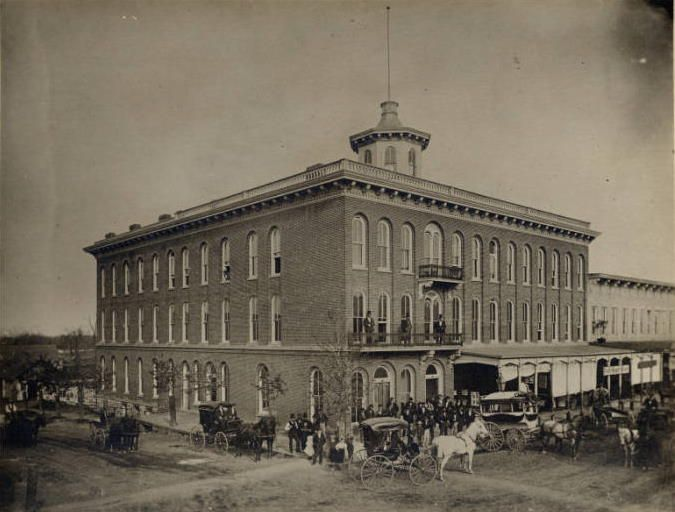
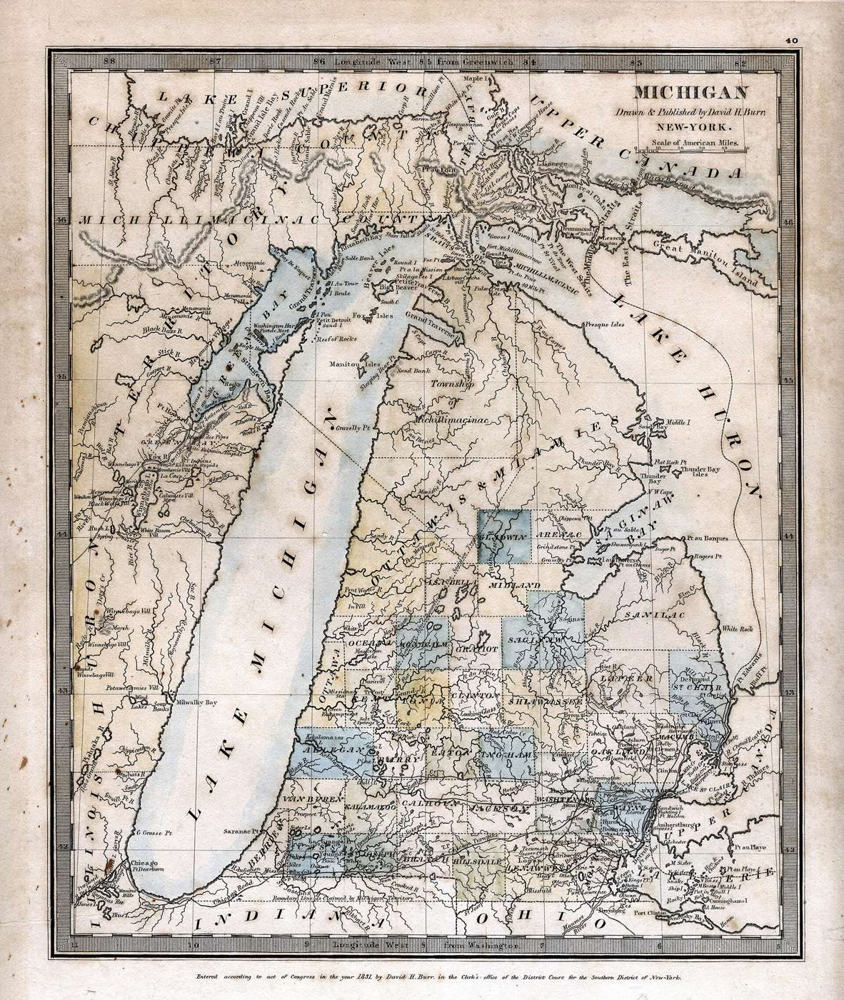

Biography
William Tuffs (the family name spelled the old way) went west after the war and died in Indiana in 1848, aged ninety-seven. A DAR chapter in Elkhart bears his name.
Service Record
Town: Schoharie, N.Y.; Ohio; Elkhart, Ind. · Dates: 1750 – 1848
Born 20 Sep. 1750, Medford by his own pension affidavit (“Mystic/West Medford”), though the book notes no birth record was found and the Piscataqua wilderness of N.H. is more likely. (Tufts Kinsmen, Vol. I, p. 150, family no. 35-8; owner-supplied extract; page scan not on file)
Fully accredited Revolutionary service; also claimed War of 1812 service; on the 1840 Pensioners List. (Tufts Kinsmen, Vol. I, p. 150, family no. 35-8; owner-supplied extract; page scan not on file)
Did not return home after the war: Schoharie, N.Y. (then Albany Co.), 1790; then Pennsylvania; Streetsboro, Ohio; Michigan Territory 1834; died at Elkhart, Ind., 19 Sep. 1848; buried in Bonneville Cemetery near Bristol, Ind. The Elkhart DAR chapter is named for him. (Tufts Kinsmen, Vol. I, p. 150, family no. 35-8; owner-supplied extract; page scan not on file)
Family tales say he took part in the Boston Tea Party, but he is not listed among the Lodge of Masons participants. (Tufts Kinsmen, Vol. I, p. 150, family no. 35-8; owner-supplied extract; page scan not on file)
Family Connection
Family number 35-8 in Tufts Kinsmen, Vol. I. Parents are not named in the extract seen.
⚑ Unverified
Birthplace is disputed in the source itself. The Tea Party story is family tradition only. The Tufts Kinsmen Vol. I statements on this page come from an extract supplied by the owner and have not yet been checked against a page scan (citation rule: page scan not on file). No other source on this site has yet been checked for this man.
Pictures






_DH_Burr.jpg){kind=link}
Further Research Links
Outside resources for further research. Secondary and user-contributed sites (blogs, family trees, memorial sites, Wikipedia) are not verified here.
- Battle of Rhode Island / Battle of Rhode Island (1778) (Wikipedia)
- Full PDF (Internet Archive)
- William Tuffs memorial, Bonneyville Cemetery, Bristol, Elkhart County, Indiana (Find a Grave)
- Boston Tea Party Ships & Museum – William Tuffs participant profile (bostonteapartyship.com)
- Tufts Genealogy Blog – William Tuffs / Tufts Revolutionary service and Tea Party claim (Tufts Genealogy blog)
- SAR marker, Bonneyville Cemetery, Bristol, IN (1900s); additional SAR marker, Municipal Building Lawn, Elkhart, IN (1932) (HMdb) link reported broken (checked 2026-11-03)